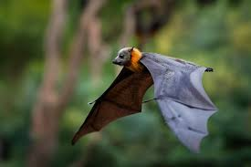

Bats

Bats are fascinating mammals belonging to the order Chiroptera, characterized by their unique ability to fly using membranous wings formed from stretched skin between elongated fingers. With over 1,400 species distributed worldwide, bats are one of the most diverse groups of mammals, occupying a wide range of habitats and ecological niches. They play important ecological roles as pollinators, seed dispersers, and insect predators, contributing to ecosystem functioning and biodiversity. Here's an in-depth exploration of these remarkable and often misunderstood creatures:
Description
- Physical Characteristics: Bats exhibit a wide range of sizes, shapes, and colors, with some species resembling small rodents, while others have distinctive facial features, such as large ears, elaborate noses, or leaf-like appendages. They possess elongated forelimbs adapted for flight, with a thin, flexible membrane of skin stretched between their fingers, arms, and legs, known as the patagium. Bats have keen senses, including echolocation for navigating in the dark and locating prey, and excellent night vision adapted to low-light conditions.
- Diet and Feeding Behavior: Bats are highly diverse in their dietary preferences, with some species being insectivorous, frugivorous, nectarivorous, carnivorous, or omnivorous. Insect-eating bats play important roles in controlling insect populations, consuming vast quantities of insects each night, including mosquitoes, moths, beetles, and agricultural pests. Fruit bats and nectar-feeding bats are important pollinators and seed dispersers, contributing to the reproduction and regeneration of plant species in diverse ecosystems.
- Habitat and Distribution: Bats inhabit a wide range of terrestrial and aerial habitats, including forests, caves, deserts, grasslands, and urban areas. They exhibit diverse habitat preferences, with some species roosting in caves, crevices, hollow trees, or man-made structures, while others inhabit open spaces or roost in foliage. Bats are found on every continent except Antarctica, with the highest species diversity occurring in tropical regions with abundant food and roosting resources.
Ecological Role
- Pollination and Seed Dispersal: Bats are important pollinators and seed dispersers for a variety of plant species, including many tropical fruits, flowers, and agaves. Fruit-eating bats feed on nectar and pollen while visiting flowers, transferring pollen between plants and promoting cross-pollination and genetic diversity. They also play a crucial role in dispersing seeds through their feces, aiding in the colonization and regeneration of plant communities in diverse habitats.
- Insect Pest Control: Insect-eating bats provide valuable ecosystem services by controlling insect pest populations in agricultural and natural ecosystems. By consuming large numbers of insects each night, bats help suppress insect pests that damage crops, forests, and urban landscapes, reducing the need for chemical pesticides and promoting sustainable pest management practices. Bats are particularly effective predators of nocturnal insects such as moths, beetles, and mosquitoes, which they capture in flight using echolocation and agile aerial maneuvers.
- Ecosystem Health and Stability: Bats play integral roles in maintaining ecosystem health and stability through their interactions with other organisms and ecosystem processes. As keystone species and ecosystem engineers, bats influence plant-pollinator interactions, seed dispersal dynamics, and nutrient cycling, shaping the structure and function of diverse ecosystems. Their presence and activity contribute to biodiversity, ecological resilience, and ecosystem functioning, making them valuable indicators of ecosystem health and integrity.
Conservation and Management
- Habitat Protection: Protecting and conserving bat habitats is essential for maintaining viable bat populations and supporting their ecological functions. Preserving natural habitats such as forests, caves, wetlands, and riparian areas provides essential roosting sites, foraging habitat, and shelter for bats and other wildlife. Implementing habitat restoration projects, creating wildlife corridors, and mitigating habitat fragmentation can enhance the connectivity and resilience of bat populations to environmental changes.
- Mitigating Threats: Addressing threats to bat populations, including habitat loss, fragmentation, pollution, climate change, and disease, requires coordinated conservation efforts at local, regional, and global scales. Implementing measures to reduce human disturbances, such as limiting cave access, minimizing light pollution, and controlling disturbance from recreational activities, can help protect bat roosts and minimize stress on bat populations.
- Public Education and Outreach: Raising awareness about the ecological importance of bats, dispelling myths and misconceptions, and promoting bat-friendly practices can foster positive attitudes towards bat conservation and stewardship. Engaging local communities, landowners, policymakers, and stakeholders in bat conservation initiatives, citizen science projects, and educational programs can build support for bat-friendly policies and practices and enhance public appreciation for these valuable and misunderstood creatures.
Fun Facts
- Echolocation: Bats use echolocation, a sophisticated sonar system, to navigate in the dark and locate prey with remarkable accuracy. They emit high-frequency sound pulses through their mouths or noses and listen for echoes bouncing off objects in their environment, allowing them to create detailed mental maps of their surroundings and pinpoint the location of prey items in mid-flight.
- Longevity: Some bat species are known for their exceptional longevity compared to other mammals of similar size. For example, the little brown bat (Myotis lucifugus) can live up to 30 years in the wild, despite its small size. Researchers are studying the genetic and physiological factors that contribute to bats' extended lifespans, which may hold insights into aging and longevity in other species, including humans.
- Diverse Adaptations: Bats exhibit remarkable diversity in their adaptations to different environments and ecological niches. From the lush rainforests of the tropics to the arid deserts of the southwestern United States, bats have evolved a wide array of specialized traits and behaviors to thrive in diverse habitats. Some species, such as the greater bulldog bat (Noctilio leporinus), have elongated snouts and specialized claws for catching fish, while others, like the Mexican free-tailed bat (Tadarida brasiliensis), are renowned for their spectacular aerial acrobatics and massive colony formations.
In conclusion, bats are remarkable mammals that play essential ecological roles, contribute to biodiversity, and provide valuable services to ecosystems and human societies worldwide. By understanding and appreciating the unique adaptations, behaviors, and ecological significance of bats, we can work towards conserving these fascinating creatures and ensuring their continued survival for future generations to enjoy and benefit from.